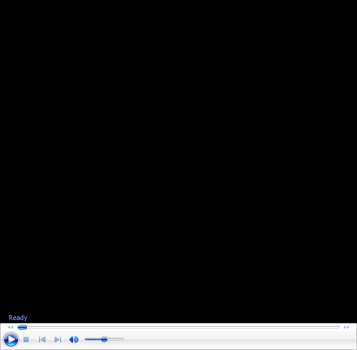

The Golden Move #9: One Foot Pivot¶
One Foot Pivot
David Bailey
On a deep, heavily spinning ball, how do great players respond? Especially when the opening is down the line. It’s the one foot pivot—stepping back with most of the weight on the outside foot, then brushing the ball heavily and raising the opposite knee for balance. See how to hit it with the forehand, and also how to use it on the two hander.
For more of David’s incredible analysis—all the other Golden Moves and examples of footwork of elite pros, Click Here.


David Bailey is a native Australian who has spent 15 years studying tennis at the professional level. He has developed a new language for one of the most complex and misunderstood aspects of the game, footwork and court movement. David has worked with world class players and coaches, national tennis associations and top academies, and has presented at coaching seminars around the world. His teaching system, the Bailey Method, has become a regular part of the coaching curriculum at the Nick Bollettierri Tennis Academy, where it is personally endorsed by Nick
Visit David’s Website! Click Here!
To Contact David directly Click Here!
Dave Bailey Video Lessons & Transcripts
Full Illustrated Article: Contact Moves: The Pivot Moves (7 Figures)
24. Lesson 8 Simple 1-Legged, 1-Foot Pivot Moves
Video Transcript
So now we've moved on to level two lesson eight. So here we go with the one-foot pivots where we're getting that elbow high and pivoting that foot back foot and hitting in different directions. So split, shuffle back one-foot pivot down the line knee up to the chest. Get the elbow high. Split, let's repeat that down the line turn the foot in the direction down the line. Ready step split, go back pivot the foot bring the leg around reverse pivot and come back.
So I'm pulling the leg cross court. Split, pulling the leg up getting the hips facing the target. Then we're going to do the run around. So we split, we run around hit the one-foot pivot down the line. And again ready steps split one-foot pivot down the line. Now we're going to move a bit further back. So we split, we're going to cross back go deeper again cross court pull the leg around push off that leg and back, bring the knee up reverse pivot push off the leg and then recover.
Okay, let's put that into a one-foot pivot combination. So split, go back one-foot pivot down the line knee up. Split, shuffle back pull the leg around reverse pivot cross court. Split, run around bring the knee up hook it down the line and then split cross back on the deeper ball leg up cross court heavy getting that elbow high. Again split one-foot pivot down the line split reverse pivot cross court split run around down the line reverse pivot and then a reverse pivot where we move back, lift the leg up come back and split.
Okay, one-foot pivot down the line really pivot that foot knee up. One-foot pivot cross court pull the leg around. Okay, run around inside out get around load that back foot knee up inside out good and then move back on this one. Move back hit it heavy pivot the foot come back in and split. Excellent. >> [music]
← Previous | Footwork Home | Next →